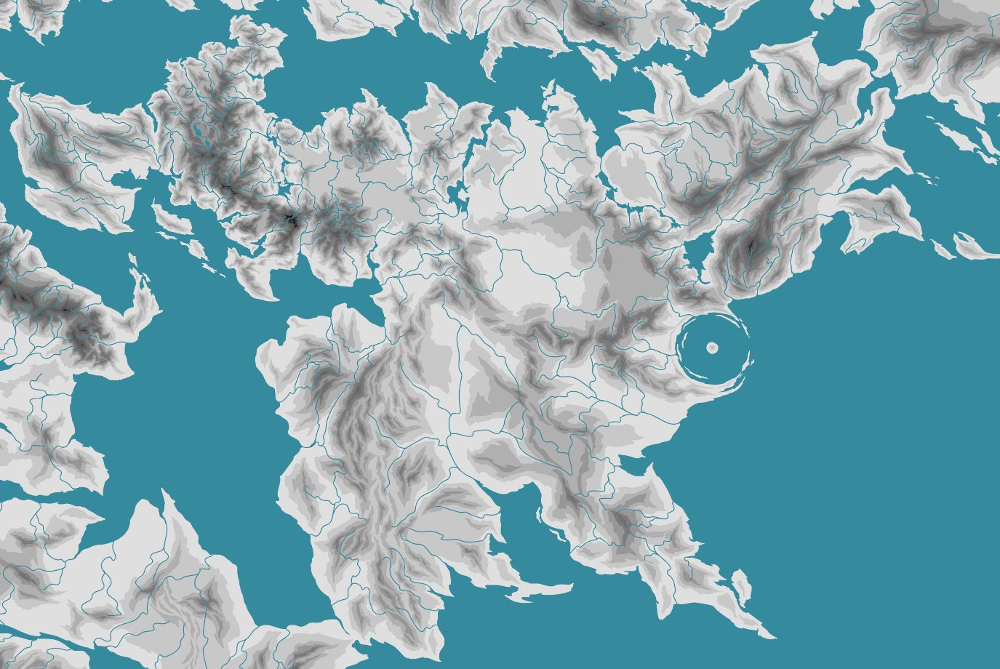

03Volný čas
Arthea
Fiktivní svět, na kterém pracuji ve volném čase. Vycházím z takzvaného hard worldbuildingu: nejdřív simuluji pohyb litosférických desek, z něj odvodím terén a teprve podle geografie určuji, kde vzniknou státy a jak se budou vyvíjet.
1Mapa

2Metoda
| Tektonika | Historie desek v GPlates určuje polohu pohoří, pánví a pobřeží. |
|---|---|
| Terén | Ručně kreslený v Affinity nad výškovými daty. |
| Zdroje | Worldbuilding Pasta, Madeline James |
| Jazyky | Pro jazyky tohoto typu světa vzniká Conlang Evolution Engine. |
3Dějiny
Dějiny nepíšu předem. Odvozuji je z mapy, tedy z toho, kudy vedou obchodní cesty, kde je úrodná půda a odkud hrozí útok. Příklady:
- Obchodní cesty podél pobřeží a jezer určují, kde se soustředí moc.
- Nájezdy od jezer a ze severu vedou roztříštěné státy k centralizaci.
- Sucho přeruší severní obchodní cestu, region se rozpadne a přeživší se přesunou k moři.
- Kupci na ostrově vybudují námořní říši, ve které vládne obchodní vrstva místo dynastie.
4Stolní hry
Vedu vlastní kampaně Dungeons & Dragons. Hraju Android: Netrunner a Twilight Imperium IV.